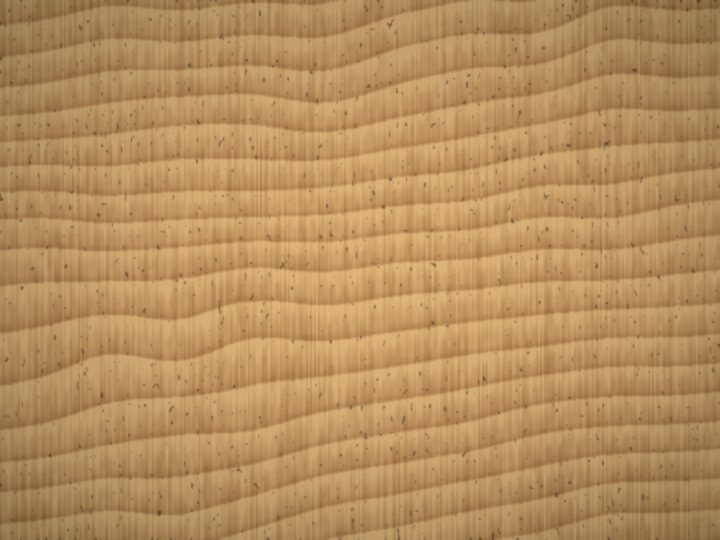

Carvalho
Veio marcado · Tom médioLer a história
Uma das madeiras mais antigas da construção e do mobiliário europeu: serviu para casas, barcos e barris de vinho, e ficou como símbolo de força e de durabilidade. Resistente e estável, envelhece muito bem.
- Serve para
- Cozinhas, mesas, portas, roupeiros e pavimentos.
- Combina com
- Lacado branco
- Cinza
- Preto mate
- Pedra bege